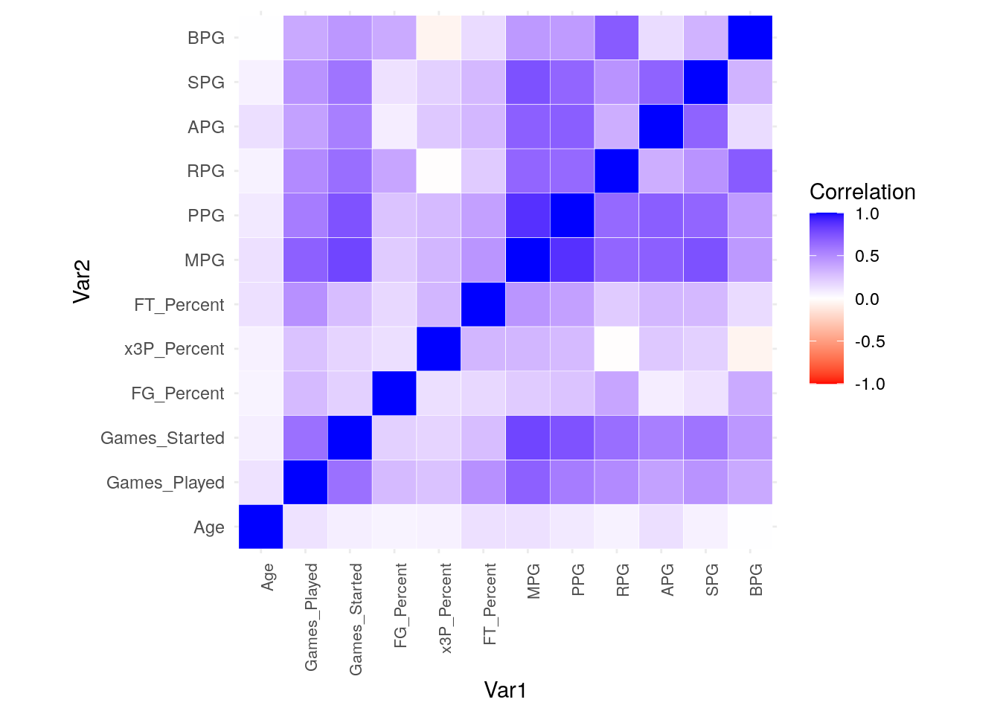
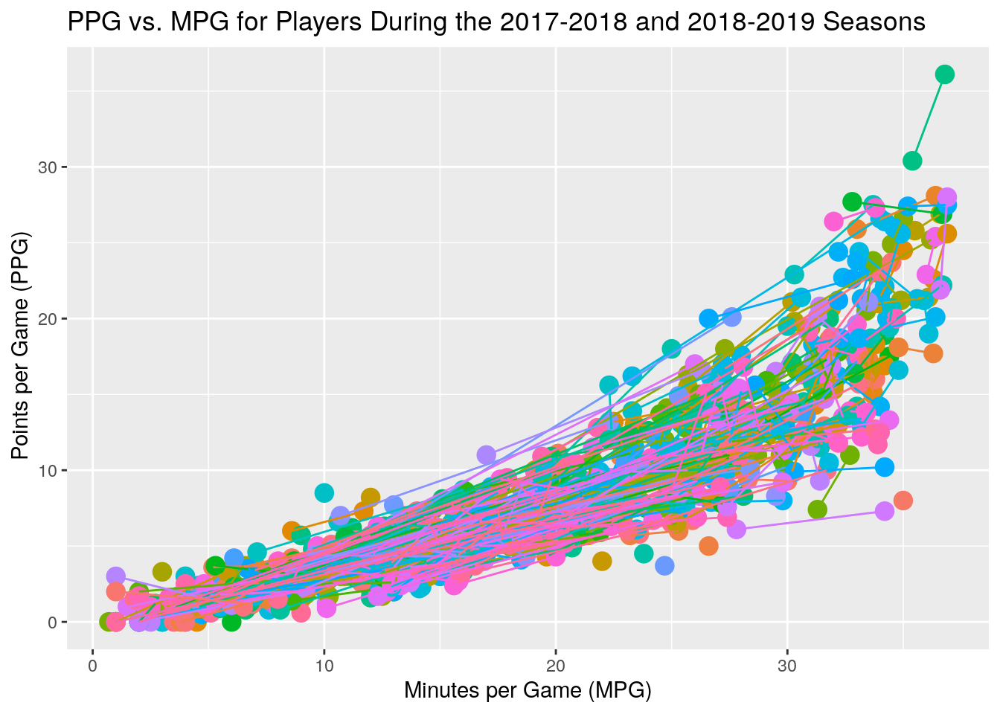
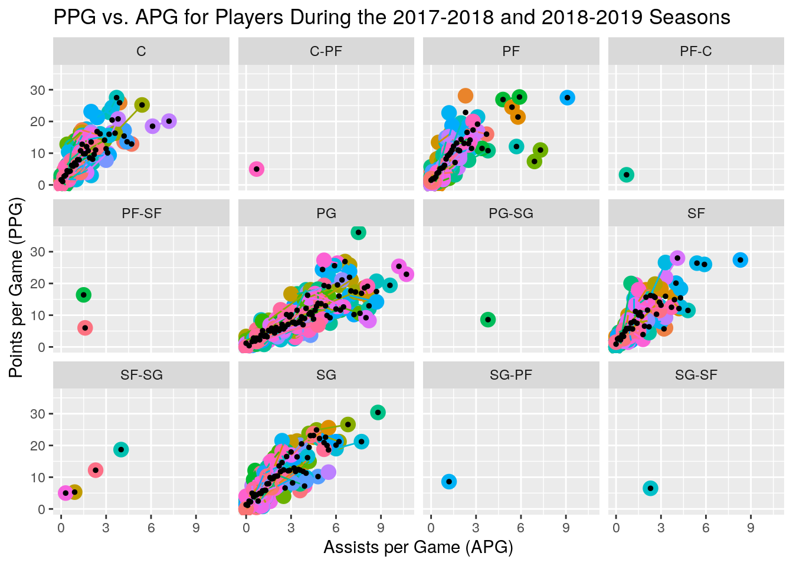
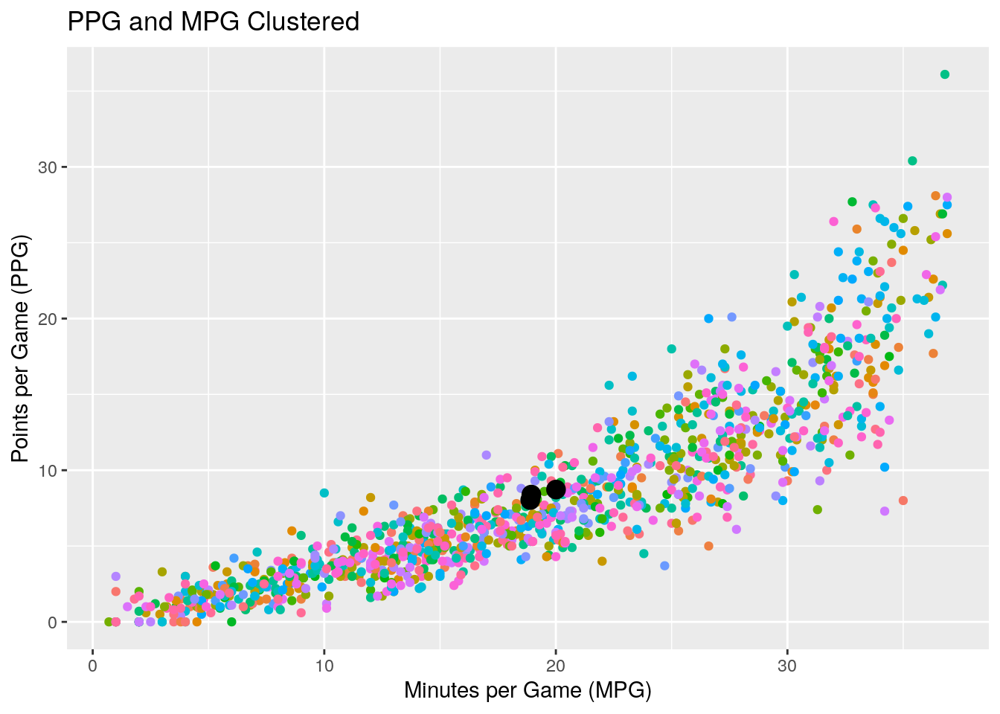

Austin Alvarez (apa636)
For this project, I have chosen to look at stats from the 2017-2018 and 2018-2019 NBA season because I was interested in comparing player stats from both seasons. The 2017-2018 and 2018-2019 seaons were chosen since they were the two most recent full seasons played. The variables contained in both datasets include player, position, and age among 26 other variables. The data for this project was acquired from basketball-reference.com, which is considered one of the best if not the best website for in-depth NBA statistics and data. The datasets were interesting to me because I’m a big fan of the NBA and statistics in sports, so I thought combining my two loves and interests would make for an interesting and fun project!
I expect to find players who were among the best performers in the 2017-2018 season to be among the best performers in the 2018-2019 season, assuming injuries weren’t an inhibiting factor, because most players that are in their primes should perform roughly the same, if not better, in back to back seasons. I think that the players who are among the worst performers in the 2017-2018 season will not be among the worst performers from the 2018-2019 season since they would either improve or no longer play in the NBA due to their lack of performance/production.
library(dplyr)
library(tidyverse)
library(janitor)
library(rvest)
url <- "https://www.basketball-reference.com/leagues/NBA_2018_totals.html"
NBA_stats1 <- url %>% read_html() %>% html_table() %>% .[[1]]
NBA_stats1 <- NBA_stats1 %>% remove_empty("cols") %>% clean_names() %>%
dplyr::filter(!player == "Player") %>% mutate_at(vars(-c(player,
tm, pos)), as.numeric) %>% mutate_at(vars(-c(player, tm,
pos)), funs(replace(., is.na(.), 0))) %>% as_tibble()
str(NBA_stats1)## Classes 'tbl_df', 'tbl' and 'data.frame': 664 obs. of 30 variables:
## $ rk : num 1 2 3 4 5 6 7 8 9 10 ...
## $ player : chr "Álex Abrines" "Quincy Acy" "Steven Adams" "Bam Adebayo" ...
## $ pos : chr "SG" "PF" "C" "C" ...
## $ age : num 24 27 24 20 32 29 32 19 25 36 ...
## $ tm : chr "OKC" "BRK" "OKC" "MIA" ...
## $ g : num 75 70 76 69 53 21 75 72 18 22 ...
## $ gs : num 8 8 76 19 3 0 75 31 1 0 ...
## $ mp : num 1134 1359 2487 1368 682 ...
## $ fg : num 115 130 448 174 65 5 687 234 6 44 ...
## $ fga : num 291 365 712 340 162 ...
## $ fg_percent : num 0.395 0.356 0.629 0.512 0.401 0.333 0.51 0.589 0.273 0.484 ...
## $ x3p : num 84 102 0 0 27 0 27 5 0 4 ...
## $ x3pa : num 221 292 2 7 70 0 92 15 11 12 ...
## $ x3p_percent : num 0.38 0.349 0 0 0.386 0 0.293 0.333 0 0.333 ...
## $ x2p : num 31 28 448 174 38 5 660 229 6 40 ...
## $ x2pa : num 70 73 710 333 92 ...
## $ x2p_percent : num 0.443 0.384 0.631 0.523 0.413 0.333 0.526 0.599 0.545 0.506 ...
## $ e_fg_percent: num 0.54 0.496 0.629 0.512 0.485 0.333 0.52 0.596 0.273 0.505 ...
## $ ft : num 39 49 160 129 22 2 334 114 7 11 ...
## $ fta : num 46 60 286 179 26 6 399 147 9 21 ...
## $ ft_percent : num 0.848 0.817 0.559 0.721 0.846 0.333 0.837 0.776 0.778 0.524 ...
## $ orb : num 26 40 384 118 4 3 246 144 4 20 ...
## $ drb : num 88 217 301 263 62 12 389 244 7 27 ...
## $ trb : num 114 257 685 381 66 15 635 388 11 47 ...
## $ ast : num 28 57 88 101 30 3 152 49 12 9 ...
## $ stl : num 38 33 92 32 4 2 43 28 3 11 ...
## $ blk : num 8 29 78 41 9 1 90 88 2 3 ...
## $ tov : num 25 60 128 66 21 1 111 82 9 19 ...
## $ pf : num 124 149 215 138 56 11 161 147 15 49 ...
## $ pts : num 353 411 1056 477 179 ...NBA_stats1 <- NBA_stats1 %>% group_by(player) %>% slice(1) %>%
ungroup() %>% select(-rk)
url2 <- "https://www.basketball-reference.com/leagues/NBA_2019_totals.html"
NBA_stats2 <- url2 %>% read_html() %>% html_table() %>% .[[1]]
NBA_stats2 <- NBA_stats2 %>% remove_empty("cols") %>% clean_names() %>%
dplyr::filter(!player == "Player") %>% mutate_at(vars(-c(player,
tm, pos)), as.numeric) %>% mutate_at(vars(-c(player, tm,
pos)), funs(replace(., is.na(.), 0))) %>% as_tibble()
str(NBA_stats2)## Classes 'tbl_df', 'tbl' and 'data.frame': 708 obs. of 30 variables:
## $ rk : num 1 2 3 4 5 6 7 8 9 10 ...
## $ player : chr "Álex Abrines" "Quincy Acy" "Jaylen Adams" "Steven Adams" ...
## $ pos : chr "SG" "PF" "PG" "C" ...
## $ age : num 25 28 22 25 21 21 25 33 21 23 ...
## $ tm : chr "OKC" "PHO" "ATL" "OKC" ...
## $ g : num 31 10 34 80 82 19 7 81 10 38 ...
## $ gs : num 2 0 1 80 28 3 0 81 1 2 ...
## $ mp : num 588 123 428 2669 1913 ...
## $ fg : num 56 4 38 481 280 11 3 684 13 67 ...
## $ fga : num 157 18 110 809 486 ...
## $ fg_percent : num 0.357 0.222 0.345 0.595 0.576 0.306 0.3 0.519 0.333 0.376 ...
## $ x3p : num 41 2 25 0 3 6 0 10 3 32 ...
## $ x3pa : num 127 15 74 2 15 23 4 42 12 99 ...
## $ x3p_percent : num 0.323 0.133 0.338 0 0.2 0.261 0 0.238 0.25 0.323 ...
## $ x2p : num 15 2 13 481 277 5 3 674 10 35 ...
## $ x2pa : num 30 3 36 807 471 ...
## $ x2p_percent : num 0.5 0.667 0.361 0.596 0.588 0.385 0.5 0.528 0.37 0.443 ...
## $ e_fg_percent: num 0.487 0.278 0.459 0.595 0.579 0.389 0.3 0.522 0.372 0.466 ...
## $ ft : num 12 7 7 146 166 4 1 349 8 45 ...
## $ fta : num 13 10 9 292 226 4 2 412 12 60 ...
## $ ft_percent : num 0.923 0.7 0.778 0.5 0.735 1 0.5 0.847 0.667 0.75 ...
## $ orb : num 5 3 11 391 165 3 1 251 11 3 ...
## $ drb : num 43 22 49 369 432 16 3 493 15 20 ...
## $ trb : num 48 25 60 760 597 19 4 744 26 23 ...
## $ ast : num 20 8 65 124 184 5 6 194 13 25 ...
## $ stl : num 17 1 14 117 71 1 2 43 1 6 ...
## $ blk : num 6 4 5 76 65 4 0 107 0 6 ...
## $ tov : num 14 4 28 135 121 6 2 144 8 33 ...
## $ pf : num 53 24 45 204 203 13 4 179 7 47 ...
## $ pts : num 165 17 108 1108 729 ...NBA_stats2 <- NBA_stats2 %>% group_by(player) %>% slice(1) %>%
ungroup() %>% select(-rk)
NBA_stats1 %>% pivot_wider(names_from = "tm", values_from = "pts")## # A tibble: 540 x 58
## player pos age g gs mp fg fga fg_percent x3p x3pa
## <chr> <chr> <dbl> <dbl> <dbl> <dbl> <dbl> <dbl> <dbl> <dbl> <dbl>
## 1 Aaron… PG 33 32 1 189 28 69 0.406 11 31
## 2 Aaron… PF 22 58 57 1909 375 865 0.434 115 342
## 3 Aaron… SG 23 9 3 233 19 69 0.275 9 43
## 4 Aaron… PG 31 1 0 35 3 9 0.333 1 4
## 5 Abdel… SF 24 48 1 522 50 149 0.336 23 65
## 6 Adrei… PF 26 5 0 43 7 10 0.7 2 3
## 7 Al Ho… C 31 72 72 2277 368 753 0.489 97 226
## 8 Al Je… C 33 36 1 484 111 208 0.534 0 3
## 9 Al-Fa… PF 27 69 67 2072 230 582 0.395 125 339
## 10 Alan … PF 25 5 0 70 7 18 0.389 0 0
## # … with 530 more rows, and 47 more variables: x3p_percent <dbl>, x2p <dbl>,
## # x2pa <dbl>, x2p_percent <dbl>, e_fg_percent <dbl>, ft <dbl>, fta <dbl>,
## # ft_percent <dbl>, orb <dbl>, drb <dbl>, trb <dbl>, ast <dbl>, stl <dbl>,
## # blk <dbl>, tov <dbl>, pf <dbl>, MIN <dbl>, ORL <dbl>, DAL <dbl>, HOU <dbl>,
## # BOS <dbl>, IND <dbl>, POR <dbl>, PHO <dbl>, UTA <dbl>, OKC <dbl>,
## # LAL <dbl>, TOR <dbl>, BRK <dbl>, PHI <dbl>, DET <dbl>, GSW <dbl>,
## # MEM <dbl>, ATL <dbl>, CLE <dbl>, NOP <dbl>, CHI <dbl>, TOT <dbl>,
## # LAC <dbl>, MIA <dbl>, SAC <dbl>, WAS <dbl>, MIL <dbl>, SAS <dbl>,
## # CHO <dbl>, NYK <dbl>, DEN <dbl>NBA_stats1 %>% pivot_longer(c("pts"), names_to = "Points", values_to = "Points Scored")## # A tibble: 540 x 30
## player pos age tm g gs mp fg fga fg_percent x3p x3pa
## <chr> <chr> <dbl> <chr> <dbl> <dbl> <dbl> <dbl> <dbl> <dbl> <dbl> <dbl>
## 1 Aaron… PG 33 MIN 32 1 189 28 69 0.406 11 31
## 2 Aaron… PF 22 ORL 58 57 1909 375 865 0.434 115 342
## 3 Aaron… SG 23 DAL 9 3 233 19 69 0.275 9 43
## 4 Aaron… PG 31 HOU 1 0 35 3 9 0.333 1 4
## 5 Abdel… SF 24 BOS 48 1 522 50 149 0.336 23 65
## 6 Adrei… PF 26 ORL 5 0 43 7 10 0.7 2 3
## 7 Al Ho… C 31 BOS 72 72 2277 368 753 0.489 97 226
## 8 Al Je… C 33 IND 36 1 484 111 208 0.534 0 3
## 9 Al-Fa… PF 27 POR 69 67 2072 230 582 0.395 125 339
## 10 Alan … PF 25 PHO 5 0 70 7 18 0.389 0 0
## # … with 530 more rows, and 18 more variables: x3p_percent <dbl>, x2p <dbl>,
## # x2pa <dbl>, x2p_percent <dbl>, e_fg_percent <dbl>, ft <dbl>, fta <dbl>,
## # ft_percent <dbl>, orb <dbl>, drb <dbl>, trb <dbl>, ast <dbl>, stl <dbl>,
## # blk <dbl>, tov <dbl>, pf <dbl>, Points <chr>, `Points Scored` <dbl>NBA_stats2 %>% pivot_wider(names_from = "tm", values_from = "pts")## # A tibble: 530 x 58
## player pos age g gs mp fg fga fg_percent x3p x3pa
## <chr> <chr> <dbl> <dbl> <dbl> <dbl> <dbl> <dbl> <dbl> <dbl> <dbl>
## 1 Aaron… PF 23 78 78 2633 470 1046 0.449 121 347
## 2 Aaron… PG 22 50 0 646 105 262 0.401 43 127
## 3 Abdel… SF 25 61 1 694 91 215 0.423 32 100
## 4 Al Ho… C 32 68 68 1973 387 723 0.535 73 203
## 5 Al-Fa… PF 28 81 81 2292 257 593 0.433 96 280
## 6 Alan … PF 26 5 0 26 8 13 0.615 0 1
## 7 Alec … SG 27 64 24 1375 192 474 0.405 61 168
## 8 Álex … SG 25 31 2 588 56 157 0.357 41 127
## 9 Alex … PG 24 25 4 531 77 173 0.445 24 50
## 10 Alex … C 25 77 31 1544 320 648 0.494 74 204
## # … with 520 more rows, and 47 more variables: x3p_percent <dbl>, x2p <dbl>,
## # x2pa <dbl>, x2p_percent <dbl>, e_fg_percent <dbl>, ft <dbl>, fta <dbl>,
## # ft_percent <dbl>, orb <dbl>, drb <dbl>, trb <dbl>, ast <dbl>, stl <dbl>,
## # blk <dbl>, tov <dbl>, pf <dbl>, ORL <dbl>, IND <dbl>, OKC <dbl>, BOS <dbl>,
## # POR <dbl>, BRK <dbl>, TOT <dbl>, LAL <dbl>, ATL <dbl>, GSW <dbl>,
## # NYK <dbl>, PHI <dbl>, DET <dbl>, MIN <dbl>, LAC <dbl>, CLE <dbl>,
## # NOP <dbl>, CHI <dbl>, MIA <dbl>, SAC <dbl>, CHO <dbl>, MIL <dbl>,
## # WAS <dbl>, DEN <dbl>, MEM <dbl>, SAS <dbl>, HOU <dbl>, TOR <dbl>,
## # UTA <dbl>, DAL <dbl>, PHO <dbl>NBA_stats2 %>% pivot_longer(c("pts"), names_to = "Points", values_to = "Points Scored")## # A tibble: 530 x 30
## player pos age tm g gs mp fg fga fg_percent x3p x3pa
## <chr> <chr> <dbl> <chr> <dbl> <dbl> <dbl> <dbl> <dbl> <dbl> <dbl> <dbl>
## 1 Aaron… PF 23 ORL 78 78 2633 470 1046 0.449 121 347
## 2 Aaron… PG 22 IND 50 0 646 105 262 0.401 43 127
## 3 Abdel… SF 25 OKC 61 1 694 91 215 0.423 32 100
## 4 Al Ho… C 32 BOS 68 68 1973 387 723 0.535 73 203
## 5 Al-Fa… PF 28 POR 81 81 2292 257 593 0.433 96 280
## 6 Alan … PF 26 BRK 5 0 26 8 13 0.615 0 1
## 7 Alec … SG 27 TOT 64 24 1375 192 474 0.405 61 168
## 8 Álex … SG 25 OKC 31 2 588 56 157 0.357 41 127
## 9 Alex … PG 24 LAL 25 4 531 77 173 0.445 24 50
## 10 Alex … C 25 ATL 77 31 1544 320 648 0.494 74 204
## # … with 520 more rows, and 18 more variables: x3p_percent <dbl>, x2p <dbl>,
## # x2pa <dbl>, x2p_percent <dbl>, e_fg_percent <dbl>, ft <dbl>, fta <dbl>,
## # ft_percent <dbl>, orb <dbl>, drb <dbl>, trb <dbl>, ast <dbl>, stl <dbl>,
## # blk <dbl>, tov <dbl>, pf <dbl>, Points <chr>, `Points Scored` <dbl>For part 1, my datasets were already tidy so what I did was use the pivot_wider() function in order to untidy my datasets then I tidied them back together by using the pivot_longer() function.
NBA_stats <- full_join(NBA_stats1, NBA_stats2, by = c("player",
"pos", "age", "tm", "g", "gs", "mp", "fg", "fga", "fg_percent",
"x3p", "x3pa", "x3p_percent", "x2p", "x2pa", "x2p_percent",
"e_fg_percent", "ft", "fta", "ft_percent", "orb", "drb",
"trb", "ast", "stl", "blk", "tov", "pf", "pts"))In part 2, I used the full_join dplyr join function to join my two datasets together by every common variable that the two datasets shared. I chose this join function because it gave me observations for each variable unlike inner_join and I didn’t chose left_join or right_join because they didn’t combine the two datasets, they just returned me the same data as my first and second datasets, respectively. Additionally, I didn’t see any cases that were dropped when the two datasets were joined.
NBA_Season_Stats <- NBA_stats %>% mutate(MPG = mp/g, PPG = pts/g,
RPG = trb/g, APG = ast/g, SPG = stl/g, BPG = blk/g) %>% select(1:6,
10, 13, 20, 30:35) %>% mutate_if(is.numeric, round, digits = 3) %>%
rename(Player = player, Position = pos, Age = age, Team = tm,
Games_Played = g, Games_Started = gs, FG_Percent = fg_percent,
x3P_Percent = x3p_percent, FT_Percent = ft_percent) %>%
mutate_at(vars(MPG, PPG, RPG, APG, SPG, BPG), round, 1)
NBA_Season_Stats %>% summarize_all(n_distinct)## # A tibble: 1 x 15
## Player Position Age Team Games_Played Games_Started FG_Percent x3P_Percent
## <int> <int> <int> <int> <int> <int> <int> <int>
## 1 658 12 24 31 82 83 307 240
## # … with 7 more variables: FT_Percent <int>, MPG <int>, PPG <int>, RPG <int>,
## # APG <int>, SPG <int>, BPG <int>NBA_Season_Stats %>% summarise_at(c("Age", "Games_Played", "Games_Started",
"FG_Percent", "x3P_Percent", "FT_Percent", "MPG", "PPG",
"RPG", "APG", "SPG", "BPG"), mean, na.rm = T)## # A tibble: 1 x 12
## Age Games_Played Games_Started FG_Percent x3P_Percent FT_Percent MPG PPG
## <dbl> <dbl> <dbl> <dbl> <dbl> <dbl> <dbl> <dbl>
## 1 26.0 48.8 23.0 0.440 0.287 0.692 19.3 8.38
## # … with 4 more variables: RPG <dbl>, APG <dbl>, SPG <dbl>, BPG <dbl>NBA_Season_Stats %>% summarise_at(c("Age", "Games_Played", "Games_Started",
"FG_Percent", "x3P_Percent", "FT_Percent", "MPG", "PPG",
"RPG", "APG", "SPG", "BPG"), sd, na.rm = T)## # A tibble: 1 x 12
## Age Games_Played Games_Started FG_Percent x3P_Percent FT_Percent MPG PPG
## <dbl> <dbl> <dbl> <dbl> <dbl> <dbl> <dbl> <dbl>
## 1 4.18 26.8 28.0 0.115 0.157 0.224 9.25 6.02
## # … with 4 more variables: RPG <dbl>, APG <dbl>, SPG <dbl>, BPG <dbl>NBA_Season_Stats %>% summarise_at(c("Age", "Games_Played", "Games_Started",
"FG_Percent", "x3P_Percent", "FT_Percent", "MPG", "PPG",
"RPG", "APG", "SPG", "BPG"), max, na.rm = T)## # A tibble: 1 x 12
## Age Games_Played Games_Started FG_Percent x3P_Percent FT_Percent MPG PPG
## <dbl> <dbl> <dbl> <dbl> <dbl> <dbl> <dbl> <dbl>
## 1 42 82 82 1 1 1 36.9 36.1
## # … with 4 more variables: RPG <dbl>, APG <dbl>, SPG <dbl>, BPG <dbl>NBA_Season_Stats %>% summarise_at(c("Age", "Games_Played", "Games_Started",
"FG_Percent", "x3P_Percent", "FT_Percent", "MPG", "PPG",
"RPG", "APG", "SPG", "BPG"), min, na.rm = T)## # A tibble: 1 x 12
## Age Games_Played Games_Started FG_Percent x3P_Percent FT_Percent MPG PPG
## <dbl> <dbl> <dbl> <dbl> <dbl> <dbl> <dbl> <dbl>
## 1 19 1 0 0 0 0 0.7 0
## # … with 4 more variables: RPG <dbl>, APG <dbl>, SPG <dbl>, BPG <dbl>NBA_Season_Stats %>% arrange(desc(Age))## # A tibble: 1,070 x 15
## Player Position Age Team Games_Played Games_Started FG_Percent x3P_Percent
## <chr> <chr> <dbl> <chr> <dbl> <dbl> <dbl> <dbl>
## 1 Vince… PF 42 ATL 76 9 0.419 0.389
## 2 Vince… SF 41 SAC 58 5 0.403 0.345
## 3 Jason… SG 40 MIL 51 4 0.383 0.348
## 4 Manu … SG 40 SAS 65 0 0.434 0.333
## 5 Dirk … PF 40 DAL 51 20 0.359 0.312
## 6 Dirk … C 39 DAL 77 77 0.456 0.409
## 7 Damie… SF 38 IND 19 1 0.333 0.222
## 8 Jamal… SG 38 PHO 64 0 0.397 0.332
## 9 Pau G… C 38 TOT 30 6 0.447 0.462
## 10 Udoni… C 38 MIA 10 1 0.333 0
## # … with 1,060 more rows, and 7 more variables: FT_Percent <dbl>, MPG <dbl>,
## # PPG <dbl>, RPG <dbl>, APG <dbl>, SPG <dbl>, BPG <dbl>NBA_Season_Stats %>% group_by(Team) %>% top_n(15, Age) %>% summarise(mean(Age))## # A tibble: 31 x 2
## Team `mean(Age)`
## <chr> <dbl>
## 1 ATL 28.3
## 2 BOS 28
## 3 BRK 27.9
## 4 CHI 25.2
## 5 CHO 27.9
## 6 CLE 30.3
## 7 DAL 30.6
## 8 DEN 29.4
## 9 DET 28.7
## 10 GSW 31.9
## # … with 21 more rowsNBA_Season_Stats %>% group_by(Team) %>% top_n(15, MPG) %>% summarise(mean(MPG))## # A tibble: 31 x 2
## Team `mean(MPG)`
## <chr> <dbl>
## 1 ATL 26.3
## 2 BOS 28.9
## 3 BRK 27.4
## 4 CHI 28.3
## 5 CHO 26.8
## 6 CLE 26.0
## 7 DAL 25.5
## 8 DEN 28.6
## 9 DET 25.5
## 10 GSW 27.8
## # … with 21 more rowsNBA_Season_Stats %>% group_by(Team) %>% top_n(15, PPG) %>% summarise(mean(PPG))## # A tibble: 31 x 2
## Team `mean(PPG)`
## <chr> <dbl>
## 1 ATL 12.6
## 2 BOS 14.5
## 3 BRK 13.8
## 4 CHI 14.0
## 5 CHO 12.7
## 6 CLE 12.3
## 7 DAL 11.4
## 8 DEN 13.9
## 9 DET 11.7
## 10 GSW 15.0
## # … with 21 more rowsNBA_Season_Stats %>% group_by(Team) %>% top_n(15, RPG) %>% summarise(mean(RPG))## # A tibble: 31 x 2
## Team `mean(RPG)`
## <chr> <dbl>
## 1 ATL 5.32
## 2 BOS 5.21
## 3 BRK 5.07
## 4 CHI 5.5
## 5 CHO 5.37
## 6 CLE 5.73
## 7 DAL 4.77
## 8 DEN 5.8
## 9 DET 4.97
## 10 GSW 5.38
## # … with 21 more rowsNBA_Season_Stats %>% group_by(Team) %>% top_n(15, APG) %>% summarise(mean(APG))## # A tibble: 31 x 2
## Team `mean(APG)`
## <chr> <dbl>
## 1 ATL 3.15
## 2 BOS 3.37
## 3 BRK 3.28
## 4 CHI 3.28
## 5 CHO 2.83
## 6 CLE 2.51
## 7 DAL 2.81
## 8 DEN 3.32
## 9 DET 2.62
## 10 GSW 3.88
## # … with 21 more rowsNBA_Season_Stats %>% group_by(Team) %>% top_n(15, SPG) %>% summarise(mean(SPG))## # A tibble: 31 x 2
## Team `mean(SPG)`
## <chr> <dbl>
## 1 ATL 0.929
## 2 BOS 1.01
## 3 BRK 0.72
## 4 CHI 1.09
## 5 CHO 0.767
## 6 CLE 0.80
## 7 DAL 0.747
## 8 DEN 1.01
## 9 DET 0.80
## 10 GSW 0.95
## # … with 21 more rowsNBA_Season_Stats %>% group_by(Team) %>% top_n(15, BPG) %>% summarise(mean(BPG))## # A tibble: 31 x 2
## Team `mean(BPG)`
## <chr> <dbl>
## 1 ATL 0.66
## 2 BOS 0.611
## 3 BRK 0.5
## 4 CHI 0.587
## 5 CHO 0.62
## 6 CLE 0.375
## 7 DAL 0.547
## 8 DEN 0.653
## 9 DET 0.469
## 10 GSW 0.981
## # … with 21 more rowsNBA_Season_Stats %>% filter(between(MPG, 35, 37)) %>% select(1,
3, 4, 10) %>% arrange(desc(MPG))## # A tibble: 25 x 4
## Player Age Team MPG
## <chr> <dbl> <chr> <dbl>
## 1 LeBron James 33 CLE 36.9
## 2 Bradley Beal 25 WAS 36.9
## 3 Paul George 28 OKC 36.9
## 4 James Harden 29 HOU 36.8
## 5 Giannis Antetokounmpo 23 MIL 36.7
## 6 Jimmy Butler 28 MIN 36.7
## 7 Damian Lillard 27 POR 36.6
## 8 Paul George 27 OKC 36.6
## 9 Anthony Davis 24 NOP 36.4
## 10 Khris Middleton 26 MIL 36.4
## # … with 15 more rowsNBA_Season_Stats %>% filter(between(PPG, 25, 37)) %>% select(1,
3, 4, 11) %>% arrange(desc(PPG))## # A tibble: 22 x 4
## Player Age Team PPG
## <chr> <dbl> <chr> <dbl>
## 1 James Harden 29 HOU 36.1
## 2 James Harden 28 HOU 30.4
## 3 Anthony Davis 24 NOP 28.1
## 4 Paul George 28 OKC 28
## 5 Giannis Antetokounmpo 24 MIL 27.7
## 6 LeBron James 33 CLE 27.5
## 7 Joel Embiid 24 PHI 27.5
## 8 LeBron James 34 LAL 27.4
## 9 Stephen Curry 30 GSW 27.3
## 10 Damian Lillard 27 POR 26.9
## # … with 12 more rowsNBA_Season_Stats %>% filter(between(RPG, 10, 16)) %>% select(1,
3, 4, 12) %>% arrange(desc(RPG))## # A tibble: 30 x 4
## Player Age Team RPG
## <chr> <dbl> <chr> <dbl>
## 1 Andre Drummond 24 DET 16
## 2 Andre Drummond 25 DET 15.6
## 3 DeAndre Jordan 29 LAC 15.2
## 4 Joel Embiid 24 PHI 13.6
## 5 DeAndre Jordan 30 TOT 13.1
## 6 DeMarcus Cousins 27 NOP 12.9
## 7 Rudy Gobert 26 UTA 12.9
## 8 Clint Capela 24 HOU 12.7
## 9 Dwight Howard 32 CHO 12.5
## 10 Giannis Antetokounmpo 24 MIL 12.5
## # … with 20 more rowsNBA_Season_Stats %>% filter(between(APG, 7, 11)) %>% select(1,
3, 4, 13) %>% arrange(desc(APG))## # A tibble: 25 x 4
## Player Age Team APG
## <chr> <dbl> <chr> <dbl>
## 1 Russell Westbrook 30 OKC 10.7
## 2 Russell Westbrook 29 OKC 10.2
## 3 John Wall 27 WAS 9.6
## 4 LeBron James 33 CLE 9.1
## 5 James Harden 28 HOU 8.8
## 6 John Wall 28 WAS 8.7
## 7 Kyle Lowry 32 TOR 8.7
## 8 LeBron James 34 LAL 8.3
## 9 Ben Simmons 21 PHI 8.2
## 10 Rajon Rondo 31 NOP 8.2
## # … with 15 more rowsNBA_Season_Stats %>% filter(between(SPG, 1.7, 2.4)) %>% select(1,
3, 4, 14) %>% arrange(desc(SPG))## # A tibble: 26 x 4
## Player Age Team SPG
## <chr> <dbl> <chr> <dbl>
## 1 Victor Oladipo 25 IND 2.4
## 2 Paul George 28 OKC 2.2
## 3 Robert Covington 28 TOT 2.1
## 4 Eric Bledsoe 28 TOT 2
## 5 Jimmy Butler 28 MIN 2
## 6 Kawhi Leonard 26 SAS 2
## 7 Kris Dunn 23 CHI 2
## 8 Paul George 27 OKC 2
## 9 Chris Paul 33 HOU 2
## 10 James Harden 29 HOU 2
## # … with 16 more rowsNBA_Season_Stats %>% filter(between(BPG, 1.5, 2.7)) %>% select(1,
3, 4, 15) %>% arrange(desc(BPG))## # A tibble: 26 x 4
## Player Age Team BPG
## <chr> <dbl> <chr> <dbl>
## 1 Myles Turner 22 IND 2.7
## 2 Anthony Davis 24 NOP 2.6
## 3 Kristaps Porziņģis 22 NYK 2.4
## 4 Anthony Davis 25 NOP 2.4
## 5 Mitchell Robinson 20 NYK 2.4
## 6 Rudy Gobert 25 UTA 2.3
## 7 Rudy Gobert 26 UTA 2.3
## 8 Brook Lopez 30 MIL 2.2
## 9 JaVale McGee 31 LAL 2
## 10 Clint Capela 23 HOU 1.9
## # … with 16 more rowsNBA_Season_Stats %>% na.omit %>% select_if(is.numeric) %>% cor()## Age Games_Played Games_Started FG_Percent x3P_Percent
## Age 1.000000000 0.1229787 0.07252542 0.05159752 0.059023370
## Games_Played 0.122978687 1.0000000 0.62049137 0.29502737 0.260897303
## Games_Started 0.072525425 0.6204914 1.00000000 0.20082391 0.183939446
## FG_Percent 0.051597516 0.2950274 0.20082391 1.00000000 0.135752396
## x3P_Percent 0.059023370 0.2608973 0.18393945 0.13575240 1.000000000
## FT_Percent 0.132907749 0.4763876 0.28120333 0.16522231 0.314462026
## MPG 0.130914098 0.6878339 0.80172955 0.22249879 0.313167004
## PPG 0.095156099 0.5652206 0.74634066 0.25424239 0.296516859
## FT_Percent MPG PPG RPG APG SPG
## Age 0.1329077 0.1309141 0.0951561 0.056208410 0.13648581 0.05907488
## Games_Played 0.4763876 0.6878339 0.5652206 0.504104520 0.40450683 0.46350299
## Games_Started 0.2812033 0.8017295 0.7463407 0.629319524 0.55492839 0.60127038
## FG_Percent 0.1652223 0.2224988 0.2542424 0.384658991 0.07605678 0.12766913
## x3P_Percent 0.3144620 0.3131670 0.2965169 -0.009111078 0.23260901 0.19928967
## FT_Percent 1.0000000 0.4575849 0.4079561 0.221768500 0.30764273 0.30180846
## MPG 0.4575849 1.0000000 0.8827646 0.665504861 0.69097578 0.75351042
## PPG 0.4079561 0.8827646 1.0000000 0.648111077 0.69765754 0.66461559
## BPG
## Age 0.005682206
## Games_Played 0.367432245
## Games_Started 0.448267444
## FG_Percent 0.365157526
## x3P_Percent -0.056321400
## FT_Percent 0.154688416
## MPG 0.441079812
## PPG 0.428665742
## [ reached getOption("max.print") -- omitted 4 rows ]In part 3, I heavily mutated my dataset NBA_stats in order to get the desired variables, a total of 15, that I want to observe in new my NBA_Season_Stats dataset. I added variables such as MPG (Minutes per Game), PPG (Points per Game), RPG (Rebounds per Game), APG (Assists per Game), SPG (Steals per Game), and BPG (Blocks per Game) because all of those, except MPG, are the five major statistical categories in basketball. The reason I included MPG was to see if there was a correlation in more minutes played per game with more points scored per game, rebounds grabbed per game, etc. The values that I rounded were rounded to correspond to how they usually are displayed in the real world such as in box scores, on websites, etc. Additionally, I used top_n(15) because each NBA team has a max number of 15 roster spots so I assumed that each team had a full roster in order to return information about average of various categories for a full team. In my new dataset, NBA_Season_Stats, I found the number of distinct observations, mean, standard deviation, maximum value, and minimum value for each variable. I got some interesting age related data from the summary statistics in this dataset and what I found was the mean age of an NBA player is 26 years old, the oldest player in the NBA was Vince Carter at 42 years old during the 2018-2019 season, the youngest player in the NBA was actually 18 different players with an age of 19 years old, the youngest team in the NBA was the Chicago Bulls with an average age of 25.2, and the oldest team in the NBA was the Houston Rockets with an average age of 32 years old.
For other summary statistics, Lebron James played the most minutes with 36.9 MPG, James Harden scored the most points with 36.1 PPG, Andre Drummond grabbed the most rebounds with 16 RPG, and Russell Westbrook dished out the most assists with 10.7 APG, Victor Oladipo stole the ball the most with 2.4 SPG, and Myles Turner swatted the most shots with 2.7 BPG. Other things that I found interesting with the summary statistics is that James Harden had the most PPG in both seasons and actually was ranked first and second for PPG in the dataset, the same was true for Andre Drummond in RPG, and Russell Westbrook in APG; however, there was a different player ranked first and second in SPG and BPG. The most impressive player I noticed in the whole dataset was LeBron James because he was ranked twice in the top 8 for PPG, twice in the top 8 for APG, and he also ranked first in MPG. Lastly, the strongest correlation I found in the matrix was between MPG and PPG with a value of 0.8827646 and the weakest correlation I found was between BPG and x3P_Percentage with -0.0563214. The correlations mean that higher your MPG is the higher your PPG will be and the higher your BPG is the worse your x3P_Percent will be.
library(reshape2)
NBA_Cor <- NBA_Season_Stats %>% na.omit %>% select_if(is.numeric) %>%
cor()
NBA_Melt <- melt(NBA_Cor)
head(NBA_Melt)## Var1 Var2 value
## 1 Age Age 1.00000000
## 2 Games_Played Age 0.12297869
## 3 Games_Started Age 0.07252542
## 4 FG_Percent Age 0.05159752
## 5 x3P_Percent Age 0.05902337
## 6 FT_Percent Age 0.13290775library(ggplot2)
ggplot(data = NBA_Melt, aes(x = Var1, y = Var2, fill = value)) +
geom_tile(color = "white") + scale_fill_gradient2(low = "red",
high = "blue", mid = "white", midpoint = 0, limit = c(-1,
1), space = "Lab", name = "Correlation") + theme_minimal() +
theme(axis.text.x = element_text(angle = 90, vjust = 1, size = 8,
hjust = 1)) + coord_fixed()
ggplot(data = NBA_Season_Stats, aes(x = MPG, y = PPG, color = Player)) +
geom_point(size = 4) + ggtitle("PPG vs. MPG for Players During the 2017-2018 and 2018-2019 Seasons") +
labs(x = "Minutes per Game (MPG)", y = " Points per Game (PPG)") +
geom_line() + theme(legend.position = "none")
NBA_Plot <- ggplot(data = NBA_Season_Stats, aes(x = APG, y = PPG,
color = Player)) + geom_point(size = 4) + ggtitle("PPG vs. APG for Players During the 2017-2018 and 2018-2019 Seasons") +
labs(x = "Assists per Game (APG)", y = " Points per Game (PPG)") +
geom_line() + theme(legend.position = "none") + stat_summary(fun = "mean",
colour = "black", size = 1, geom = "point")
NBA_Plot + facet_wrap(~Position) For plot 1, I noticed that there was a strong correlation, 0.700 or greater, between MPG and PPG, Games_Started and MPG, Games_Started and PPG, MPG and SPG, and RPG and BPG. The strong correlations make sense because the more minutes you play the more points you should score and steals you should accumulate, the more games you start the more minutes you should play and points you should score, and the more rebounds you get the more shots you should block. The last correlation mentioned, RPG and BPG, makes sense with context because if you’re grabbing rebounds you’re most likely in the paint and around the basket, which is where most shots get blocked. I noticed a weak correlation, 0.005 or less, between Age and BPG, x3P_Percentage and RPG, x3P_Percentage and BPG. The weak correlations make sense because the older you are the less athletic you get, on average, which means you’re less likely to jump up and block someone’s shot, and those that are good three point shooters usually don’t center their game around playing in the paint and get rebounds and blocking shots, which is why there’s a weak correlation between the x3P_Percentage and RPG and x3P_Percentage and BPG.
In plot 2, I noticed a significant trend in points per game (PPG) vs. minutes per game (MPG) across the 2017-2018 and 2018-2019 seasons. I saw a positive trend and correlation in my plot because as minutes per game increased so did points per game. I didn’t put labels for each player because there’s 1070 observations; however, you can see one signficant outlier in the uppermost right corner for PPG and MPG. The significant outlier mentioned is James Harden and we know this because the output for the filter for the top PPG in part 3 tells us that he’s ranked first in second in points scored. We also see from this plot that he also plays among the most minutes per game out of any player. Finally, I would conclude that James Harden was the top offensive player in the NBA during the 2017-2018 and 2018-2019 seasons based on the plot at hand.
As for plot 3, I noticed that there was a positive trend and correlation in each of the plots shown, excluding the hybrid postitions in this situation, for points per game vs. assists per game during the 2017-2018 and 2018-2019 NBA seasons. The relationship that plots showed is that the more assists one has the more points they usually have too. The position that seemed to have the strongest correlation between PPG and APG is the point guard (PG) and the position that seemed to have the weakest correlation were the power forward (PF). The point guard position having the strongest correlation isn’t a surprise since in the modern NBA the point guard scores and passes the ball while the power forward focuses on scoring and grabbing rebounds, which would explain why they have the weakest correlation.
library(cluster)
NBA_Cluster <- NBA_Season_Stats %>% dplyr::select(MPG, PPG)
head(daisy(NBA_Cluster, "gower"))## [1] 0.58483953 0.33718492 0.48088107 0.07875606 0.06360861 0.50178678NBA_Cluster2 <- NBA_Season_Stats %>% mutate(cluster = sample(c("1",
"2", "3"), 1070, replace = T)) %>% group_by(cluster) %>%
summarize(MPG = mean(MPG), PPG = mean(PPG))
ggplot(NBA_Season_Stats) + geom_point(aes(MPG, PPG, color = Player)) +
geom_point(data = NBA_Cluster2, aes(MPG, PPG, fill = ""),
color = "black", size = 4) + scale_fill_manual(name = "NBA_Cluster2",
values = "black") + ggtitle("PPG and MPG Clustered") + labs(x = "Minutes per Game (MPG)",
y = "Points per Game (PPG)") + theme(legend.position = "none")
For part 5, I made a cluster dataset, NBA_Cluster, using my NBA_Season_Stats dataset and selected MPG and PPG to compare. After that I put in daisy and use the head function to show me the first six gowers. Next, I mutated my NBA_Cluster, grouped it by cluster and summarized it by MPG =mean(MPG) and PPG =mean(PPG) to create a new dataset, NBA_Cluster2. Lastly, I made a ggplot using NBA_Cluster2 to show the clusters in the data. The final clusters showed that the mean minutes per game (MPG) and mean points per game (PPG) intersect at about 10 PPG and 20 MPG. From the clusters shown, we can infer that the mean points and minutes per game for an NBA player is about 10 PPG and 20 MPG.